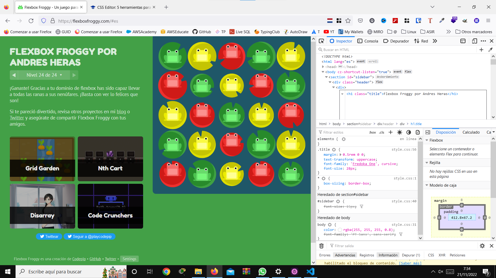
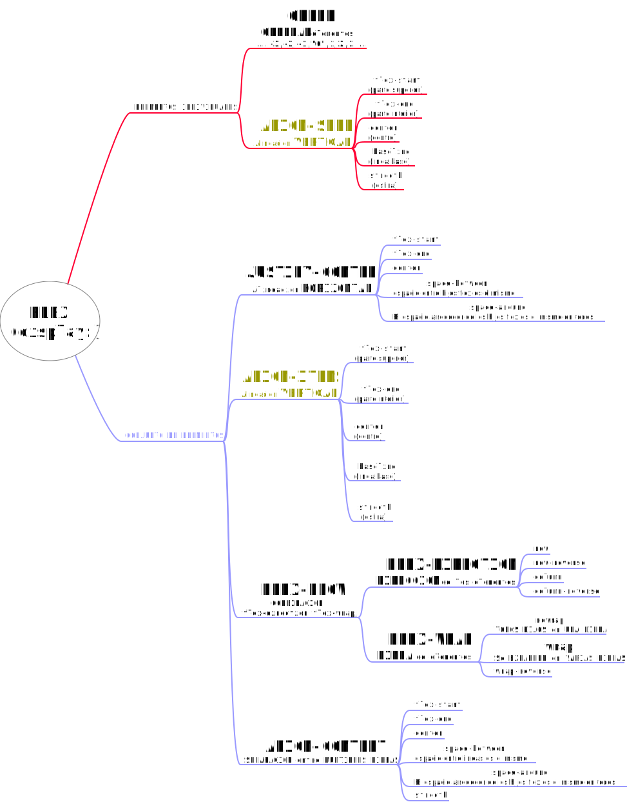

UD3 A5. CSS flexbox. Flexbox Froggy
Aquí tenéis otro juego CSS Flexbox Froggy es un juego online en el que se deben completar algunas propiedades CSS o valores relacionados con el posicionamiento FlexBox CSS El modelo de caja flexible o flexbox fue diseñado como un modelo unidimensional de layout, y como un método que pueda ayudar a distribuir el espacio entre los ítems de una interfaz y mejorar las capacidades de alineación.
Envía un pantallazo donde se vean todos los niveles completados, así como tu nombre en mayúsculas en el CSS Editor.

----
Soluciones del ejercicio
- justify-content:flex-end;
- justify-content: center;
- justify-content: space-around;
- justify-content: space-between;
- align-items:flex-end;
- align-items: center;
justify-content: center;
-
justify-content:space-around;
align-items:flex-end;
- flex-direction: row-reverse;
- flex-direction: column;
justify-content: flex-end;
- flex-direction: row-reverse;
-
flex-direction: column;
justify-content: flex-end;
-
flex-direction: column-reverse;
justify-content: space-between;
-
justify-content: center;
flex-direction: row-reverse;
align-items: flex-end;
- order: ;
- order:-;
- align-self:flex-end;
-
order:;
align-self:flex-end;
- flex-wrap:wrap;
-
flex-direction: column;
flex-wrap: wrap;
- flex-flow: column wrap;
- align-content: flex-start;
- align-content: flex-end;
- align-content: center;
flex-direction: column-reverse;
-
flex-flow: wrap-reverse column-reverse;
justify-content: center;
align-content: space-between;
